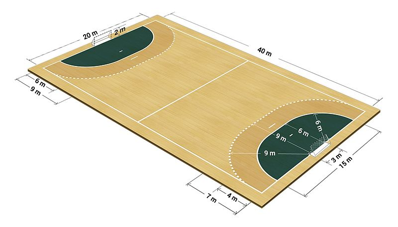
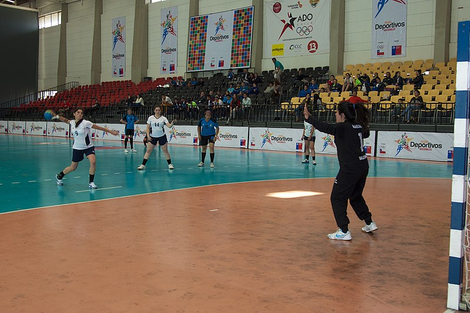
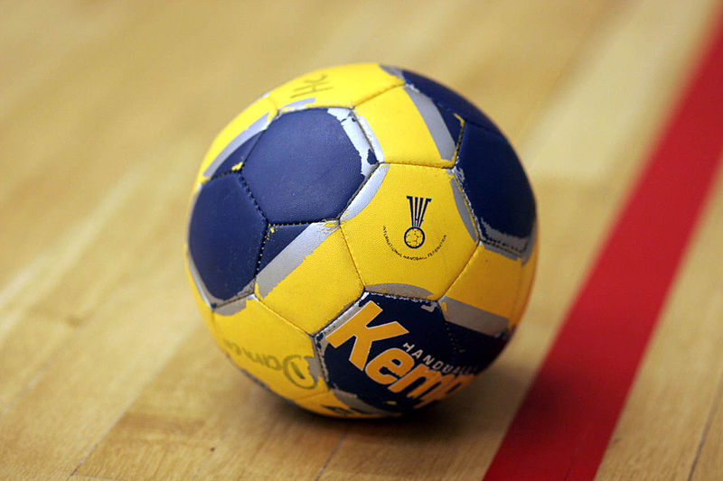

Terreno de juego
La cancha de handball tiene una superficie de 40 metros de largo y 20 metros de ancho. Se divide en dos grandes mitades cada una de las cuales está marcada con líneas para indicar que tan cerca puede llegar el jugador a la portería de la oposición y también para mostrar el área en la que el portero puede utilizar todo su cuerpo para defenderse contra los remates del equipo adversario.

{kind=link}
El arco
El arco tiene tres metros de largo y dos metros de altura.

Imagen tomada de Marca.com
Los equipos
Cada equipo consta de siete jugadores ( seis en la cancha y uno en la portería ) más jugadores sustitutivos.
El portero es el único jugador del equipo que puede tocar la pelota con los pies pero solo dentro del área de la portería. El portero puede abandonar el área de la portería siempre y cuando no esté en posesión del balón.
El trabajo de los jugadores en la cancha es defender y tratar de anotar goles cuando su propio equipo tiene la pelota.
En la cancha, los jugadores no pueden entrar en el área del portero/golero.
El golero y los jugadores de la cancha no pueden usar el mismo color de ropa.
Las sustituciones siempre están permitidas, sin embargo, nunca puede haber más de siete jugadores de un equipo en la cancha a la vez (serían penados con la expulsión).
Se permite sacar al golero y jugar con siete jugadores en la cancha.
Un jugador puede jugar como golero activo si éste utiliza la indumentaria que utiliza el golero diferenciándose del resto de los jugadores.

.jpg){kind=link}
Duración del partido
La duración de un juego puede variar dependiendo de la edad de los jugadores.
Jugadores entre 8 y 12 años: 40 minutos (2 x 20 min).
Jugadores entre 12 y 16 años: 50 minutos (2 x 25 min).
Jugadores mayores de 16 años: 60 minutos (2 x 30 min).
El descanso entre las dos mitades es siempre de 10 minutos.
Tiempo añadido
Tiempo muerto:
* Cuando un jugador es expulsado/descalificado.
* Cuando el entrenador usa la tarjeta de tiempo muerto (ambos entrenadores del equipo obtienen un minuto de descanso para repasar las tácticas). Los tiempos muertos solo pueden usarse cuando su equipo está en posesión de la pelota. Cada equipo tiene un tiempo muerto en cada mitad del juego y ninguno en la prórroga.
* Cuando el encargado del tiempo / jueces sopla el silbato. Los árbitros por lo general deciden cuándo se detiene el tiempo y comienza de nuevo.
* Se permite sustituir a los jugadores dentro y fuera de los juegos, pero no durante los tiempos muertos.
Prórroga
Si el partido está empatado al final de la duración normal del encuentro y las reglas de la competición requieren el desempate, se juega una prórroga tras cinco minutos de descanso para determinar un ganador. El periodo de prórroga consiste en dos tiempos de cinco minutos cada uno con un minuto de descanso entre ambos.
Si tras el primer periodo de la prórroga continúa el empate se disputa un segundo periodo de prórroga después de cinco minutos de descanso. Esta segunda prórroga también consiste en dos tiempos de cinco minutos con un minuto de descanso.
Tiros penales
Si el juego sigue empatado después del período de prórroga, el juego se decidirá en una competencia de lanzamientos de 7 metros, se disputaría al mejor de cinco lanzamientos de siete metros; de persistir el empate se seguiría lanzando hasta proclamar al ganador.
Se seleccionan cinco jugadores para lanzar de cada equipo. Se permite reemplazar al portero (el portero también puede lanzar)
Los jugadores expulsados no pueden tirar penales.
El balón
El balón de handball es de forma esférica formado por una cubierta de cuero o material sintético. La superficie no debe ser brillante o resbaladiza ya que los jugadores necesitan poder atraparlo con una mano. El tamaño y peso del balón se diferencia dependiendo de la edad de los jugadores:
- I Juvenil-Senior (+16 años): 58-60 cm, 425-475 gr.
- II Mujeres mayores de 14 años y hombres entre 12 y 16 años: 54-56 cm, 325-375 gr.
- III Niños de 8 a 12 años y niñas de 8 a 14: 50-52 cm, 290-330 gr.

{kind=link}
Pasos y lanzamientos
En el handball se permite:
* Hacer un máximo de tres pasos con el balón, sin hacer un pique, después de un pique, nuevamente se permite dar un máximo de 3 pasos. * Tocar el balón con las manos, los brazos, los hombros, la cabeza, el estómago, el muslo y la rodilla (jugadores en la cancha).
* Tocar el balón con todas las partes del cuerpo (portero).
* Quedarse quieto con el balón por un máximo de tres segundos (sin lanzar o picar)
* Realizar una prueba con su cuerpo para interponerse en el camino de la oposición, abriendo una brecha para que un compañero de equipo pase a través de la defensa y dispare a la meta.
En el handball no se permite:
* Dar más de tres pasos sin hacer un pique.
* Hacer un "doble pique" (hacer un nuevo pique después de que ya haya picado una vez y luego sostener el balón en sus manos).
* Tocar el balón con el pie o la parte inferior de la pierna.
* Arrancar el balón de las manos de un jugador contrario en posesión del balón.
* Empujar a un jugador contrario con el uso de las manos, los codos, etc.
* Quedarse quieto con el balón por más de 3 segundos (sin lanzar o picar).
¿Cómo se cuentan los goles?
Para que un gol cuente, toda el balón debe cruzar la línea de gol, y el equipo que anota no puede haber cometido una infracción en el intento de marcar. Estas infracciones son llamadas "errores de ataque".
Al intentar marcar un gol saltando al área del golero, el jugador debe haber soltado la pelota antes de que sus pies o cualquier otra parte del cuerpo toquen el área del golero. Un gol también puede cancelarse si un jugador de campo entra en el área del golero sin el balón.
Si uno de los entrenadores pide tiempo muerto antes de que el balón esté en la portería, el gol no contará.
Tan pronto como el árbitro haya señalado el gol (con dos silbidos rápidos y un brazo estirado en el aire, el gol no puede ser cancelado).
Video tomado de youtube
Tipos de lanzamiento
El balonmano consiste en una variedad de diferentes lanzamientos que deben ser dados por el árbitro. Algunos de estos lanzamientos son los que el árbitro debe silbar en movimiento:
Saque de centro
Este tipo de jugada se realiza al comienzo de cada periodo de un partido, así como después de un gol.
El saque de centro se ejecuta desde el centro de la cancha.
El jugador que pone el balón en juego debe pisar con un pie la línea central.
Los otros jugadores del equipo que realizan el lanzamiento deben estar en su propio lado de la cancha hasta que el lanzador ya no esté en posesión de la bola.
El lanzamiento se realiza a menudo rápidamente, lo que le da al equipo atacante la posibilidad de ejecutar una contra rápida contra una defensa que aún no está configurada correctamente.
Video tomado de youtube
Saque de banda
El saque de banda se ejecuta desde el lugar por donde el balón rebasó la línea de banda.
El equipo que no tuvo la última posesión, realiza el saque de banda.
Debe tomarse desde el lugar donde la pelota pasó por la línea banda.
El lanzador debe tener un pie en la línea lateral marcada.
No se puede picar antes de realizar el lanzamiento.
El árbitro no da una señal con respecto a un saque de banda.
Video tomado de youtube
Golpe franco
El golpe franco es un lanzamiento que se produce tras cometerse alguna falta.
El equipo que no cometió la falta es quién realiza el golpe franco.
Se realiza desde el lugar en el que se cometió la falta .
Los defensas deben alejarse al menos tres metros del lanzador.
En caso de que la falta hubiese sido cometida más cerca de la portería que los nueve metros, la falta se sacaría desde la línea de nueve metros (la discontinua) y los jugadores se situarían justo al borde del área.
Video tomado de youtube
Tiro de portería
Realizado por el portero en su propia área.
Cuando el golero o el equipo atacante tienen la última posesión de la pelota, antes de que fuera detrás de la línea de gol.
Cuando un jugador de oposición ingresa al área del golero y gana ventaja.
El golero debe hacer el lanzamiento desde una posición en su propia área de portería y lanzar el balón fuera del área del golero antes de que otro jugador pueda tocar el balón.
Video tomado de youtube
Lanzamiento de 7 metros
Se ordena un lanzamiento de siete metros en los siguientes casos:
* Cuando con una infracción en cualquier parte del terreno de juego, se frustra una clara ocasión de gol.
* Cuando el golero introduce en su propia área de portería el balón que se encuentra en el suelo fuera de ella o entra con el balón dentro de su área de portería procedente del campo de juego.
* Cuando un defensor entra en su propia área de portería obteniendo una ventaja sobre el jugador atacante en posesión del balón.
* Cuando se lanza intencionadamente el balón al propio portero, dentro de su propia área de portería y este toca el balón.
* Señal de fin de partido, no justificada, existiendo una clara ocasión de gol.
* Evitar una clara ocasión de gol por la intervención de una persona no participante en el juego.
Video tomado de youtube
El pasivo
Para hacer que el juego de handball sea lo más dinámico y rápido posible, se ha introducido la regla del juego pasivo. Esta regla asegura que un equipo siempre tenga que intentar crear un ataque y una oportunidad de gol potencial en el lado opuesto de la cancha de los equipos contrarios. Por lo tanto, un equipo no puede simplemente lanzar la pelota de un lado a otro entre sus jugadores con la intención de hacer correr el reloj, sin intentar marcar un gol.
Tan pronto como el árbitro note una tendencia que indique un juego pasivo del equipo en posesión de la pelota, levantará un brazo. Es responsabilidad exclusiva del árbitro dar esta señal. A partir de aquí, el equipo en posesión de la pelota tendrá un máximo de seis pases entre sus jugadores, antes de intentar un tiro a puerta.
Un tiro libre o un lanzamiento del equipo atacante no reiniciará el número permitido de pases. Si a un equipo se le otorga un golpe franco después de su tercer pase, el inicio del golpe franco se considerará como el cuarto pase. El tiro a puerta no cuenta como pase.
Si un equipo no dispara a puerta después de los seis pases, se otorga un tiro libre al equipo defensor.
Video tomado de youtube
Exclusiones y tarjetas
Si un jugador o un entrenador comete una falta o violación, el árbitro lo puede castigar con una tarjeta o una exclusión. Estos se pueden dar en conexión con un tiro libre o un lanzamiento de siete metros.
Exclusión
A la segunda tarjeta amarilla o al segundo aviso, el jugador abandonará el terreno de juego durante 2 minutos.
Durante la exclusión de dos minutos, el jugador no podrá regresar a la cancha hasta que finalice el tiempo de penalización. El equipo es castigado y jugará con un jugador menos. Cuantas más exclusiones de dos minutos reciba un equipo, menos jugadores dispondrá. La penalización entra en vigencia de inmediato, ya que el árbitro impone el castigo, por lo que será posible jugar cinco contra tres durante un período de tiempo.
Tarjeta amarilla
La tarjeta amarilla se da en el handbol como advertencia, no como expulsión.
El árbitro puede elegir sacar la tarjeta amarilla contra un jugador o entrenador cuando se comete una infracción, lo que no se considera lo suficientemente grave como para dar una exclusión de dos minutos.
Un jugador/entrenador solo puede recibir una tarjeta amarilla durante un partido.
La segunda vez que un jugador/entrenador cometa una falta, recibirá una exclusión de dos minutos.
Un equipo puede recibir un máximo de tres tarjetas amarillas durante un partido.
Tarjeta roja
El árbitro pitará tarjeta roja para sancionar un castigo severo. El jugador será expulsado del terreno de juego para el resto del partido.
El árbitro puede optar por otorgar una tarjeta roja de inmediato, si se considera que la infracción es lo suficientemente grave (por ejemplo, un comportamiento agresivo o un ataque descuidado contra un oponente no preparado).
El golero que abandona el área de portería para interceptar un pase, pero termina golpeando a un oponente también recibirá una tarjeta roja (debido al peligro físico para el oponente inconsciente).
Si un jugador recibe una tercera expulsión de dos minutos en el mismo juego, se le otorgará una tarjeta roja y el jugador tendrá que abandonar el terreno de juego. Una vez que los dos minutos hayan transcurrido, el equipo podrá insertar otro jugador en la alineación.
Tarjeta azul
Anteriormente, había dudas sobre si una tarjeta roja debía o no provocar una suspensión en los siguientes juegos. Hoy existe la tarjeta azul para esas situaciones. La tarjeta azul es otorgada por el árbitro en aquellas situaciones en que cree que se debe castigar incluso más que una tarjeta roja. Esta regla solo se aplica en el nivel de elite.
Cuando se pita tarjeta roja, el árbitro también tiene que evaluar si la infracción es tan grave que también debería provocar una suspensión para los siguientes juegos. De ser así, el árbitro también puede dar la tarjeta azul después de la tarjeta roja.
Si el jugador comete una conducta antideportiva dentro de los últimos 30 segundos de un juego, el jugador recibirá una tarjeta roja/azul, y el oponente disparará un tiro de 7 metros a la meta, sin importar en qué parte de la cancha se cometió la falta.
Video tomado de youtube
Video tomado de youtube